![]()
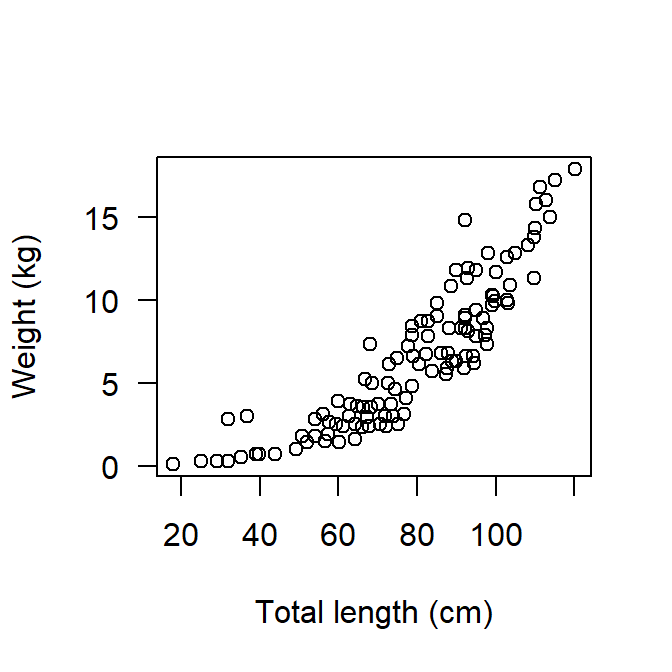
1 Introduction
The ggplot2 package provides a set of functions that mirror the Grammar of Graphics (Wickham, 2016), enabling you to efficaciously specify what you want a plot to look like. To have a glimpse of ggplot2, we start with five basic types of plots that are familiar to most people. These include: scatterplot, linegraphs, boxplots, histograms, and barplots. The first four graphs works with quantitative data and barplots are appropriate for categorical data.
Thus, understanding the type of data is inevitable before you throw the variable into ggplot2 to make plot for you. In this post, we will cover the most common plot types, such as line plots, histograms, pie charts, scatter plots, and bar plots, along with several other plot types that build upon these.
1.1 Scatterplot
Scatterplots are also called bivariate, allows you to visualize the association between two numerical variables. They are among the widely used plot in fisheries science particularly when looking for association between length and weight of a particular fish. Probably you might have come across a scatterplot like the one in Figure 1 that base R was used, but probably you have not made one based on the fundamental theorem of grammar of graphics.
We are going to visualize the relationship between length and weight of fish measured in the coastal waters of Kenya. We use the tidy_LFQ_sample_4.csv file. Let’s import the dataset in the session using read_csv function.
This file contain length and weight measurements along with sex sampled in Mombasa and Voi from March 2016 to September 2020 (Table 1).
site | date | tl_mm | fl_mm | wt_gm | sex |
|---|---|---|---|---|---|
Mombasa | 2019-04-05 | 184 | 169 | 59.50 | M |
Mombasa | 2019-04-05 | 185 | 169 | 54.71 | M |
Mombasa | 2019-04-05 | 145 | 134 | 24.15 | M |
Voi | 2020-09-11 | 189 | 174 | 65.88 | F |
Voi | 2020-09-11 | 162 | 147 | 36.35 | F |
Voi | 2020-09-11 | 168 | 153 | 46.13 | F |
Let’s now dive into the code of using the *grammar of graphics to create the scatterplot. We use the ggplot() function from ggplot2** package. The code highlighted in the chunk below was used to plot Figure 2
ggplot(data = lfq4, aes(x = tl_mm, y = wt_gm))+
geom_point()+
labs(x = "Total length (mm)", y = "Weight (gm)")
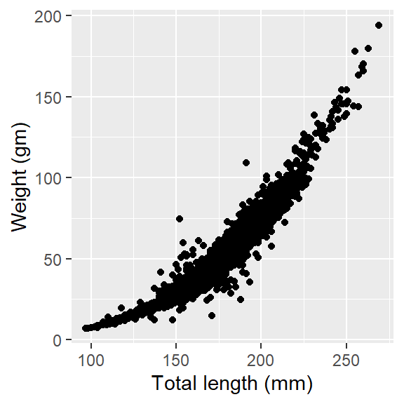
Let’s explore the code above piece-by-piece
- The plotting in ggplot2 begin with
ggplot()function, where the two components of grammar of graphics are required. in thedatacomponent we specified the dataset by settingdata = lfq4. Then the second argumentaesthetic that map the plot with coordinate was set byaes(x = tl_mm, y = wt_gm)). In a nutshell, theaes()define the variable – axis specifications. - We then added a layer to the
ggplot()function call using the+sign. The added layer specify the third part of the *grammar—thegeometric component. Because we want to plot scatterplot, the appropriategeomfor this case is thegeom_point(). - added a layer
labsthat allows us to label axis with meaningful axis titles
adding regression line you can simply add the regression line by adding a geom_smooth() layer. However, Figure 2 is non-linear and hence we need to specify the modal that fits the data, the loess model is mostly used for non-linear data. Therefore, we parse the argumentmethod = "loess" to draw a non-linear regression line but also parse an argument se = FALSE to prevent plotting confidence error.
ggplot(data = lfq4, aes(x = tl_mm, y = wt_gm))+
geom_point()+
geom_smooth(method = "loess", se = FALSE)+
labs(x = "Total length (mm)", y = "Weight (gm)")
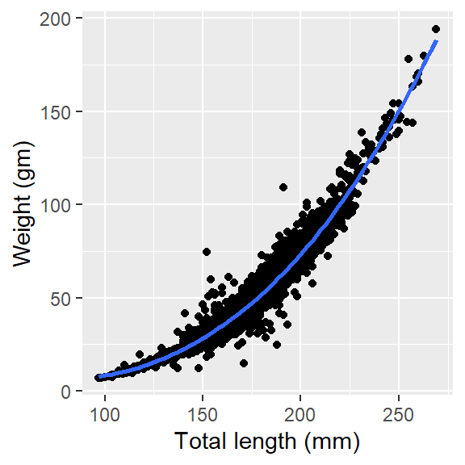
If we want to add a linear regression line i the scatter plot instead of the non linear shown in (ig-scatter2?), we simply replace method = "loess" with method = "lm"
ggplot(data = lfq4, aes(x = tl_mm, y = wt_gm))+
geom_point()+
geom_smooth(method = "lm", se = FALSE)+
labs(x = "Total length (mm)", y = "Weight (gm)")
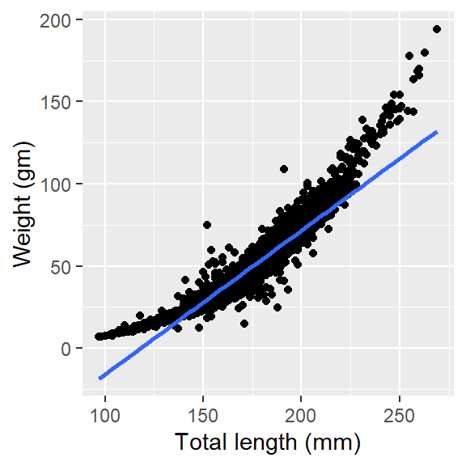
The linear regression line we added in Figure 4 does not fit the data points. That’s is nature of the length and weight measurements of most fishes as their growth is allometric and not isometric. To make use of the linear model in such data points, we often log-transform the data points first and replot. But in ggplot framework, you do need to do that but simply add the scale_x_log10 and scale_y_log10 layer
ggplot(data = lfq4, aes(x = tl_mm, y = wt_gm))+
geom_point()+
geom_smooth(method = "lm", se = FALSE)+
labs(x = "Total length (mm)", y = "Weight (gm)")+
scale_x_log10() +
scale_y_log10()
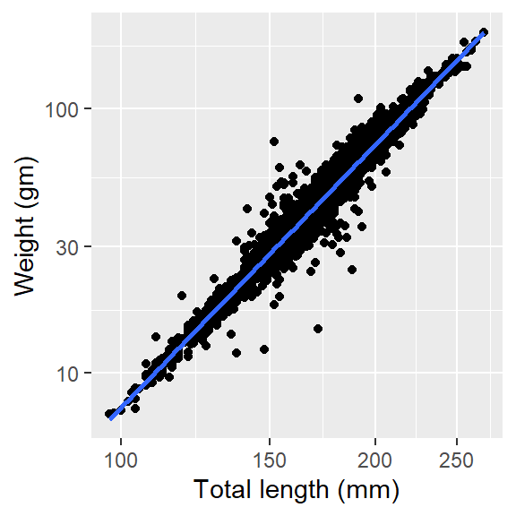
Knowing whether the relationship is positive or negative and whether is linear or non linear is one thing, but people would like to know the strength of the relationship that you have simply presented in Figure 5. Luckily, Pedro Aphalo developed a ggpmisc package (Aphalo, 2016), which extend the statistical function of ggplot2. By simply adding a layer ggpmisc::stat_correlation() in Figure 5, the function generates labels for correlation coefficients and p-value, coefficient of determination (R^2) for method “pearson” and number of observations and add them into the plot (Figure 6).
ggplot(data = lfq4, aes(x = tl_mm, y = wt_gm))+
geom_point()+
geom_smooth(method = "lm", se = FALSE)+
labs(x = "Total length (mm)", y = "Weight (gm)")+
scale_x_log10() +
scale_y_log10()+
ggpmisc::stat_correlation()
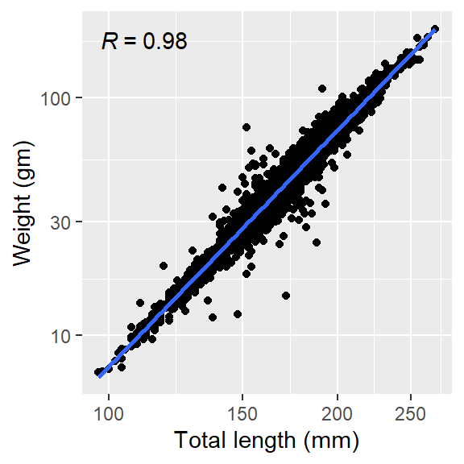
We might be interested to distinguish the data points and the regression line based on the site. We can do that by adding the color argument in the aesthetic, which change from aes(x = tl_mm, y = wt_gm) to aes(x = tl_mm, y = wt_gm, color = site). The argument color = site will force the data points and the regression line to adhere to colors based on the site but the points and line are plotted on the same plot.
ggplot(data = lfq4, aes(x = tl_mm, y = wt_gm, color = site))+
geom_point()+
geom_smooth(method = "lm", se = FALSE)+
labs(x = "Total length (mm)", y = "Weight (gm)")+
scale_x_log10() +
scale_y_log10()+
ggpmisc::stat_correlation()Looking on Figure 7, it is clear that sample from Mombasa station has relatively bigger and heavier fish than those sampled from Voi. But the problem with Figure 7 is that most of the Mombasa data points are masked by Voi data points, which are overlaid on Mombasa data points. We can overcome the issue of point cluttering by simply adding a transparency level in point with alpha = .2.
ggplot(data = lfq4, aes(x = tl_mm, y = wt_gm, color = site))+
geom_point(alpha = .2)+
geom_smooth(method = "lm", se = FALSE)+
labs(x = "Total length (mm)", y = "Weight (gm)")+
ggpmisc::stat_correlation()+
scale_x_log10() +
scale_y_log10()+
ggpmisc::stat_correlation()
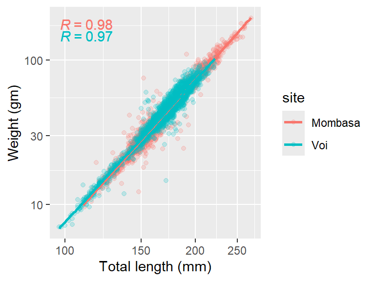
Sometimes you may wish to plot Figure 8 as separate plot shown in Figure 9. That’s is achieved with facet_wrap function, which facet plots based on the levels that are in the variable that is specified. For instance, in our case, the variable chosen is site and there are two sites–Voi and Mombasa. Therefore by simply adding a facet_wrap(~site) layer will force ggplot to make two plots
ggplot(data = lfq4, aes(x = tl_mm, y = wt_gm))+
geom_point()+
geom_smooth(method = "lm", se = FALSE)+
labs(x = "Total length (mm)", y = "Weight (gm)")+
scale_x_log10() +
scale_y_log10()+
ggpmisc::stat_correlation()+
facet_wrap(~site, nrow = 1)
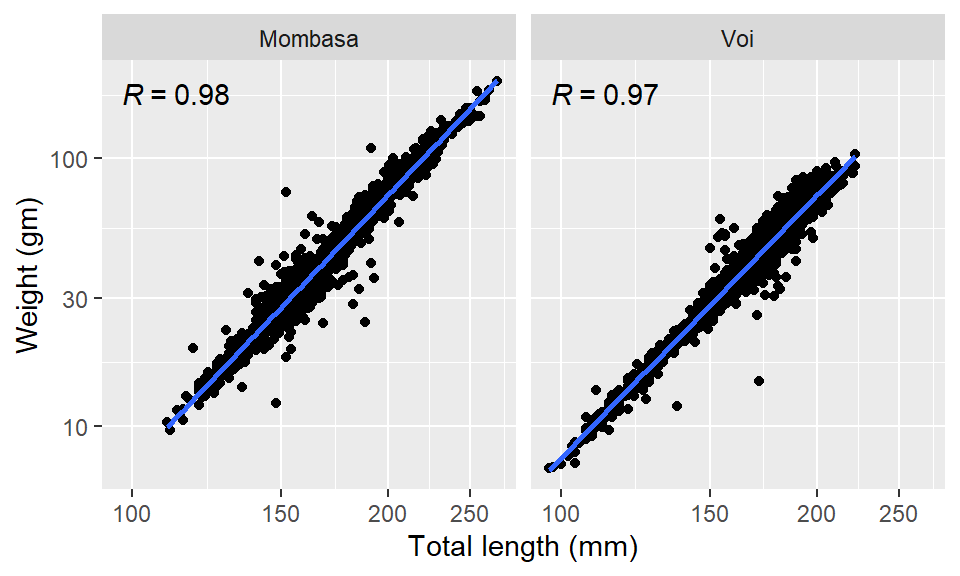
1.2 Linegraph
The next basic graph of ggplot2 is the linegraph. Line graphs is similar to drawing points, except that it connects the points with line. often times you don’t show the points. Let’s illustrate how to create linegraphs using catch data in the region. We first load the dataset in the session
The landing.countries dataset contain 660 records of landed fisheries catch information recorded between 1950 and 2015 from Somalia, Kenya, Mozambique, South Africa, Madagascar, Mauritius, Seychelles, Mayotte, Tanzania and Zanzibar.
name | year | catch | epoch |
|---|---|---|---|
Kenya | 1,950 | 19,154 | 1,960 |
Kenya | 1,951 | 21,318 | 1,960 |
Kenya | 1,952 | 19,126 | 1,960 |
Madagascar | 2,013 | 266,953 | 2,010 |
Madagascar | 2,014 | 138,478 | 2,010 |
Madagascar | 2,015 | 145,629 | 2,010 |
Linegraphs are used to show time series data. Its inappropriate to use the linegraphs for data that has no clear sequential ordering and should be continuous and not discrete data type. The internal structure of the catch dataset we just loaded indicate that with exception of country’s name, year, catch and epoch are numeric values.
Rows: 660
Columns: 4
$ name <chr> "Kenya", "Kenya", "Kenya", "Kenya", "Kenya", "Kenya", "Kenya", "…
$ year <dbl> 1950, 1951, 1952, 1953, 1954, 1955, 1956, 1957, 1958, 1959, 1960…
$ catch <dbl> 19154, 21318, 19126, 20989, 17541, 19223, 23297, 28122, 28819, 2…
$ epoch <dbl> 1960, 1960, 1960, 1960, 1960, 1960, 1960, 1960, 1960, 1960, 1960…Let’s us plot the annual landings of fish over the period with ggplot. Like the scatterplot we made earlier, where supply the data frame in data argument and specified the aesthetic mapping with x and y coordinates, but instead of using geom_point(), we use the geom_line(). The code to make the line graph of annual landing in the WIO region shown in Figure 10 is written as;
ggplot(data = landing.countries,
aes(x = year, y = catch)) +
geom_line()+
labs(x = "Year", y = "Annual catch (MT)")
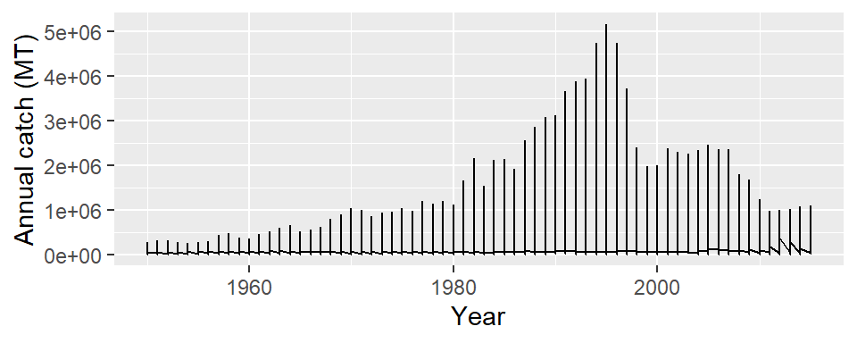
Although we added a geom_line, but we notice that Figure 10 display a plot which we did not expect. The problem is that line for the ten countries are all lumped together and result in the chaotic situation. For illustration purpose, I will use the catch data from Mauritius. Let’s filter Mauritius’ catch information from the landing.countries dataset and display its rows and variables;
name | year | catch | epoch |
|---|---|---|---|
Mauritius | 1,950 | 183,082 | 1,960 |
Mauritius | 1,951 | 216,151 | 1,960 |
Mauritius | 1,952 | 181,822 | 1,960 |
Mauritius | 2,013 | 15,797 | 2,010 |
Mauritius | 2,014 | 13,879 | 2,010 |
Mauritius | 2,015 | 16,373 | 2,010 |
There are only 66 rows in Mauritius which are equivalent to 66 records each per year from 1950 to 2015. Let’s use the mauritius.landings dataset to plot
ggplot(data = mauritius.landings,
aes(x = year, y = catch)) +
geom_line()+
labs(x = "Year", y = "Annual catch (MT)")
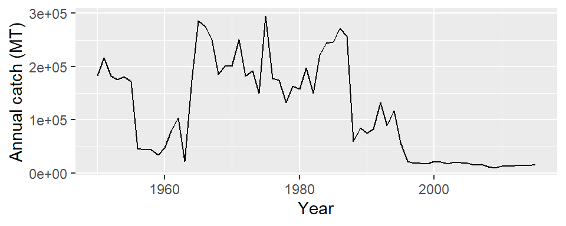
Often times you find that linegraphs has points. You can also do that in ggplot environment by adding a geom_point layer
ggplot(data = mauritius.landings,
aes(x = year, y = catch)) +
geom_line()+
geom_point()+
labs(x = "Year", y = "Annual catch (MT)")
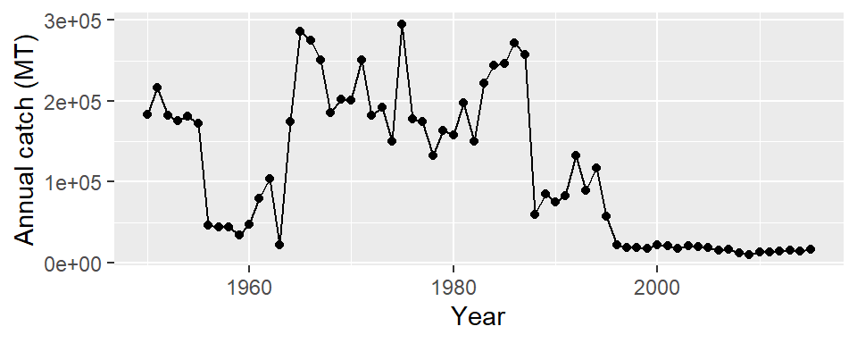
You can also customize the appearance of the line and point by parsing the color argument in the geom_point and geom_line layers
ggplot(data = mauritius.landings,
aes(x = year, y = catch)) +
geom_line(color = "black")+
geom_point(color = "red")+
labs(x = "Year", y = "Annual catch (MT)")
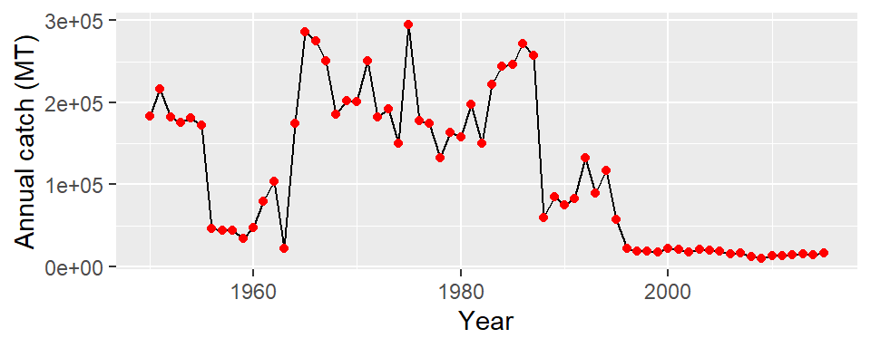
The problem we faced in Figure 10 is that catch data for all ten countries were pooled together, and the plot was not informative. But what is we want to compare the trend of catch among the countries. That is achieved by simply distinguishing the color layer for each country. That is done by adding an argument color=name in aes function as the code below highlight
ggplot(data = landing.countries,
aes(x = year, y = catch, color = name)) +
geom_line()+
# geom_point(color = "red")+
labs(x = "Year", y = "Annual catch (MT)")
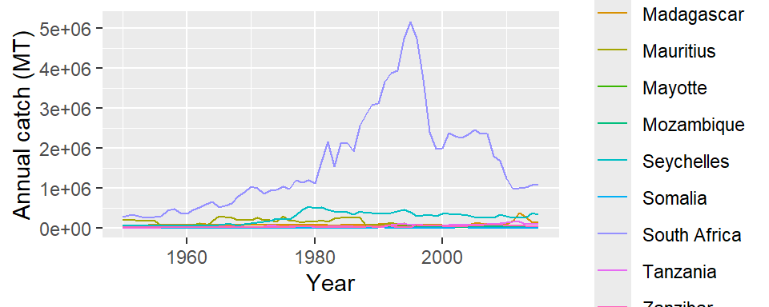
The landings from South Africa is far higher than the rest of the WIO’s countries, which overshadow the appearance of other countries (Figure 14). There several approaches to resolve this issues where some countries have low catch values while others have relatively very high catches. For our case, we have decided to remove South Africa from the plot. We can do that by negating the selection with filter function from dplyr package. By parsing filter(!name == "South Africa"), note the exclamation mark before name tell to reverse selection and therefore select all countries except South Africa.
We then plot and parse the argument data = other.countries instead of data = landing.countries to make Figure 15.
ggplot(data = other.countries,
aes(x = year, y = catch, color = name)) +
geom_line()+
# geom_point(color = "red")+
labs(x = "Year", y = "Annual catch (MT)")
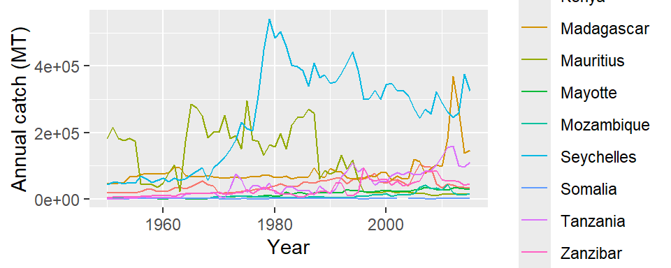
We notice that Tanzania and Zanzibar are presented as separate entity. Although the two states report to the FAO separate, but would be interested to know the landing of the combined Tanzania and Zanzibar catches. But before we combine these two states, lets see how their catches vary over the period. First we need to select only records for Tanzania and Zanzibar using a filter function as illustrated below;
Once we have created a tanzania.zanzibar object, we can use it to make plots that compare catch trend of Tanzania and Zanzibar over the last 66 years. The code in this chunk is used to make Figure 16
ggplot(data = tanzania.zanzibar,
aes(x = year, y = catch, color = name)) +
geom_line()+
# geom_point(color = "red")+
labs(x = "Year", y = "Annual catch (MT)")
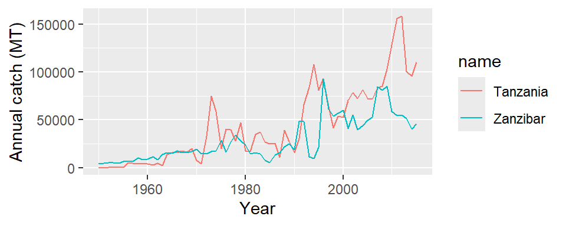
landing.countries %>%
mutate(name = str_replace(string = name,
pattern = "Zanzibar",
replacement = "Tanzania")) %>%
filter(!name == "South Africa") %>%
group_by(name, year) %>%
summarise(catch_new = sum(catch, na.rm = TRUE)) %>%
ggplot(
aes(x = year, y = catch_new, color = name)) +
geom_line()+
# geom_point(color = "red")+
labs(x = "Year", y = "Annual catch (MT)")
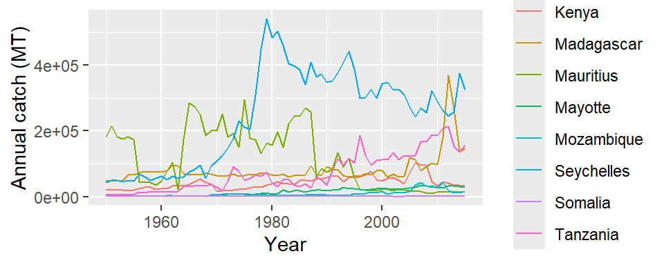
1.3 Area plot
The geom_area method is used to create an area plot. It can be used as a component in the ggplot method. The alpha parameter in the geom_area method is used to depict the opacity of a genome, the value ranges from zero to one integral values. In case, we choose a lower value, this means that a more transparent color version will be chosen to depict the plot and its smoothness. We have used the value for the alpha parameter to be one by two means it is somewhat translucent in nature.
1.4 Histogram
A histogram is a plot that can be used to examine the shape and spread of continuous data. It looks very similar to a bar graph and organized in intervals or classes. It divides the range of the data into bin equal intervals (also called bins or classes), count the number of observations in each bin, and display the frequency distribution of observations as a bar plot. Such histogram plots provide valuable information on the characteristics of the data, such as the central tendency, the dispersion and the general shape of the distribution. With lfq4 dataset, we can plot the histogram of tl_mm. Since histogram works for single variable that contains quantitative values, you can not bother looking for relationship as we have seen in previous plots, but histogram offers an opportunity to answer question like
- What are the smallest and largest values of tl_mm?
- What is the center value? 3 How does these values spread out?
We can make a histogram shown in Figure 19 by simply setting aes(x = tl_mm) and add geom_histogram(). Within the geom_histogram(), we simply specify the number of bins bins = 30, fill color for the colum and also the color separating each columns of the histogram with col == "red" and fill = "red". However, a word of caution regarding histograms—bin size matters. The reproducible code to plot Figure 19 is written as;
ggplot(data = lfq4,
aes(x = tl_mm)) +
geom_histogram(bins = 30, fill = "red", color = "red", alpha = 0.4)+
labs(x = "Total length (mm)", y = "Frequency")+
theme_minimal()
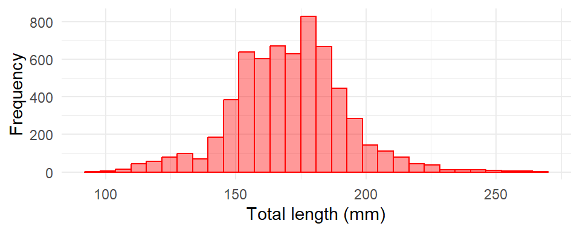
The resulting histogram gives us an idea of the range of total length of fish we can expect from the sample. You may be interested to compare histogram of the data values sampled from two or sites. For example, in our case, we are interested to compare the distribution of total length using samples collected from Mombasa and Voi sites. We simply add the fill = site argument in the aes function
ggplot(data = lfq4,
aes(x = tl_mm, fill = site)) +
geom_histogram(bins = 50, alpha = 0.6)+
labs(x = "Total length (mm)", y = "Frequency")+
theme_minimal()
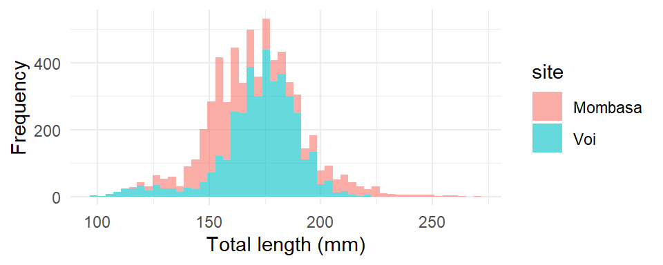
The histogram of Mombasa and Voi is plotted as shown in Figure 20, however, despite the transparency level of the bins is set to 0.6 (alpha = .6), yet the bins from Mombasa are masked with bins from Voi. The voi bins are plotted over the Mombasa ones and prevent us to visualize the underneath Mombasa bins. To correct for this issue, we need to parse position = "identity"in the geom_bin, which create an different color where the Mombasa and Voi bins are intersected.
1.5 Frequency polygons
It is often useful to visualise the distribution of a numerical variable. Comparing the distributions of different groups can lead to important insights. Visualising distributions is also essential when checking assumptions used for various statistical tests (sometimes called initial data analysis). In this section we will illustrate how this can be done using the diamonds data from the ggplot2 package, which you started to explore in Chapter 2.
An advantage with frequency polygons is that they can be used to compare groups, e.g. diamonds with different cuts, without facetting:
ggplot(data = lfq4,
aes(x = tl_mm, color = site)) +
geom_freqpoly(alpha = 0.6, position = "identity")+
labs(x = "Total length (mm)", y = "Frequency")+
theme_minimal()
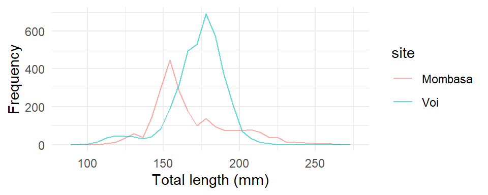
It is clear from this figure that the total length of fish from Voi is larger in size than those from Mombasa. The polygons have roughly the same shape, except the shape of Mombasa a long right tail indicating the presence of outlier points.
1.6 Density plots
In some cases, we are more interested in the shape of the distribution than in the actual counts in the different bins. Density plots are similar to frequency polygons but show an estimate of the density function of the underlying random variable. These estimates are smooth curves that are scaled so that the area below them is 1 (i.e. scaled to be proper density functions):
#|
ggplot(data = lfq4,
aes(x = tl_mm, fill = site)) +
geom_density(alpha = 0.4, position = "identity")+
labs(x = "Total length (mm)", y = "Frequency")+
theme_minimal()
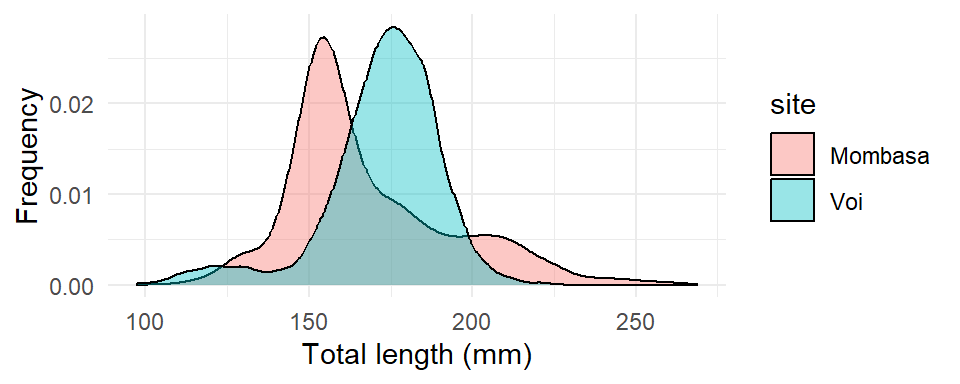
From Figure 23, it’s clear that small size fish tend to have better total length, which wasn’t obvious from the frequency polygons. However, the plot does not provide any information about how common different total length are.
1.7 Boxplot
The boxplot is a standardized way of displaying the distribution of data based on the five number summary: minimum, first quantile, median, third quantile, and maximum. Boxplots are useful for detecting outliers and for comparing distributions. These five number summary also called the 25th percentile, median, and 75th percentile of the quantitative data. The whisker (vertical lines) capture roungly 99% of a distribution, and observation outside this range are plotted as points representing outliers as shown in Figure 24.
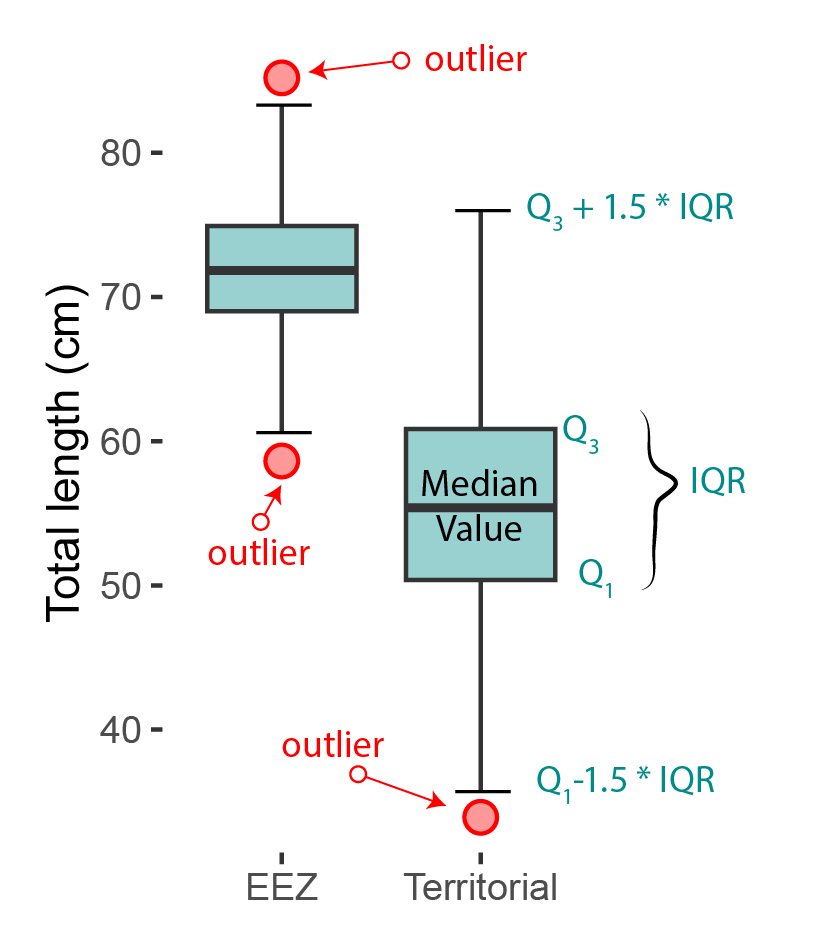
Boxplots is one of statistical plot that present continuous variable and in ggplot a geom_boxplot() function is dedicated for that. The aes function always have at least two arguments. The first argument should be a categrial variable and the second one is numeric.
ggplot(data = lfq4,
aes(x = site, y = tl_mm)) +
geom_boxplot(alpha = 0.6, position = "identity")+
labs(x = "Sites", y = "Total length (mm)")+
theme_minimal()
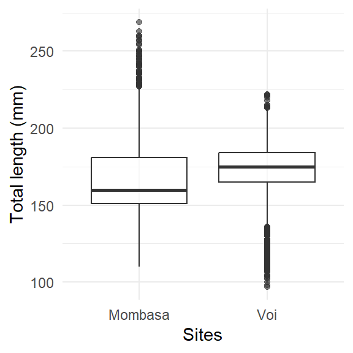
the geom_boxplot() has outlier_ arguments that allows to highlight and modify the color, shape, size, alpha … etc of outliers —extreme observation. For instance, you can highlight the outlier with;
ggplot(data = lfq4,
aes(x = site, y = tl_mm, fill = site)) +
geom_boxplot(alpha = 0.6, position = "identity", outlier.colour = "red", outlier.color = )+
labs(x = "Sites", y = "Total length (mm)")+
theme_minimal()
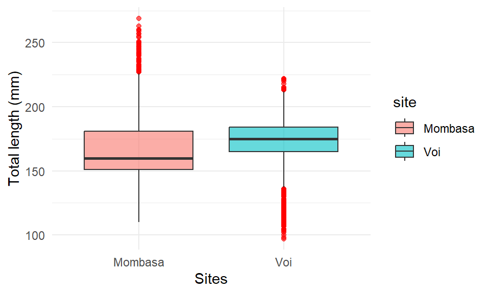
We can also map the fill and color to variable in to distinguish boxplot. for example, we can specify the fill = site argument in the aes() to fill the boxplot based on site.
ggplot(data = lfq4,
aes(x = site, y = tl_mm, fill = site)) +
geom_boxplot(alpha = 0.6, position = "identity", outlier.colour = "red", outlier.color = )+
labs(x = "Sites", y = "Total length (mm)")+
theme_minimal()
We can add the points on top of the boxplot with the geom_jitter(). It also allows for specifying other arguments like colors and width of the points.
ggplot(data = lfq4,
aes(x = site, y = tl_mm, fill = site)) +
geom_boxplot(alpha = 0.6, position = "identity",
outlier.colour = "red", outlier.color = )+
geom_jitter(width = .1, height = .5, alpha = 0.1)+
labs(x = "Sites", y = "Total length (mm)")+
theme_minimal()
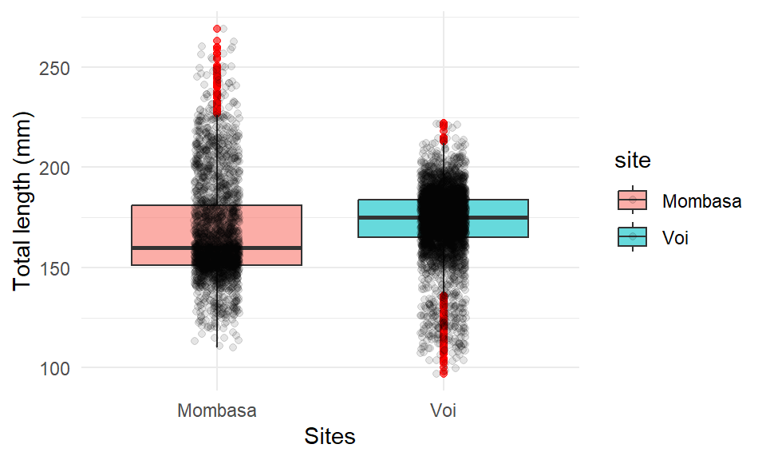
1.8 Violin plots
Instead of using a boxplot, we can use a violin plot. Each group is represented by a “violin”, given by a rotated and duplicated density plot:
1.9 Barplot
Bar graphs are perhaps the widely used plot. They are typically used to display count values on the y-axis for different groups on the x-axis. There is an important distinction you should be aware of when making bar graphs. The height of a bar in barplot may represent either the counts or percentage of elements in the dataset. Let’s begin with the former—count. We use the shrimps_cleaned.csv dataset, which contains weight and length of four shrimp species. To access the variable and values of this file we need to load the file using a read_csv function as the code in the chunk below highlight;
The sample dataset of shrimp is shown in Table 2. It contain six variables year, season, tide, species, weight (total_wt_kg) and length (tl_mm).
| year | season | tide | species | total_wt_kg | tl_mm |
|---|---|---|---|---|---|
| 2008 | WET | STF | Metapenaeus monoceros | 2.0 | 21 |
| 2008 | WET | STF | Metapenaeus monoceros | 2.0 | 20 |
| 2008 | WET | STF | Metapenaeus monoceros | 2.0 | 19 |
| 2012 | DRY | STN | Penaeus monodon | 1.7 | 12 |
| 2012 | DRY | STN | Fenneropenaeus indicus | 1.7 | 14 |
| 2012 | DRY | STN | Penaeus monodon | 1.7 | 11 |
We realize that the scientific names are too long and may not fit into the plotting area. Therefore, we use a case_when function from dplyr package to change species name and assign it as a new variable called species.short
1.9.1 Barplot for count
To make the bar graph that show the number of shrimp per species over the sampling period you you simply specify the the variable species in the x coordinates in the aesthetic and add the geom_bar()
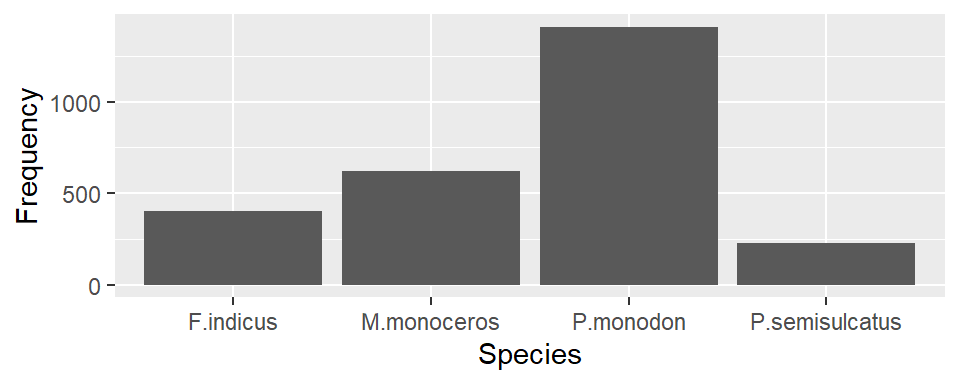
Then to stack the bar based on the sampling season, we add the argument fill = season in aes() part
ggplot(data = shrimp, aes(x = species.short, fill = season))+
geom_bar()+
labs(x = "Species", y ="Frequency")
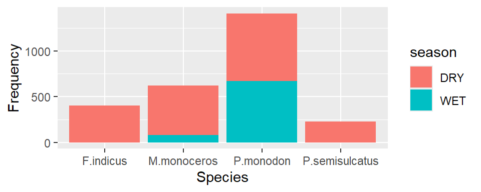
You can flip the order of bar with position = position_stack(reverse = TRUE)
ggplot(data = shrimp, aes(x = species.short, fill = season))+
geom_bar(position = position_stack(reverse = TRUE))+
labs(x = "Species", y ="Frequency")
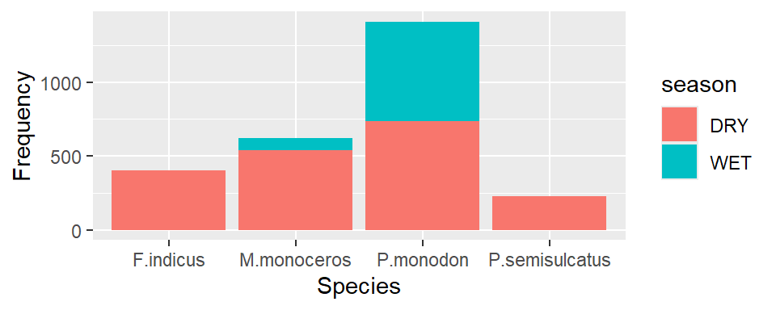
Instead of stacking, you can dodge the bar with position = position_dodge() argument
ggplot(data = shrimp, aes(x = species.short, fill = season))+
geom_bar(position = position_dodge())+
labs(x = "Species", y ="Frequency")
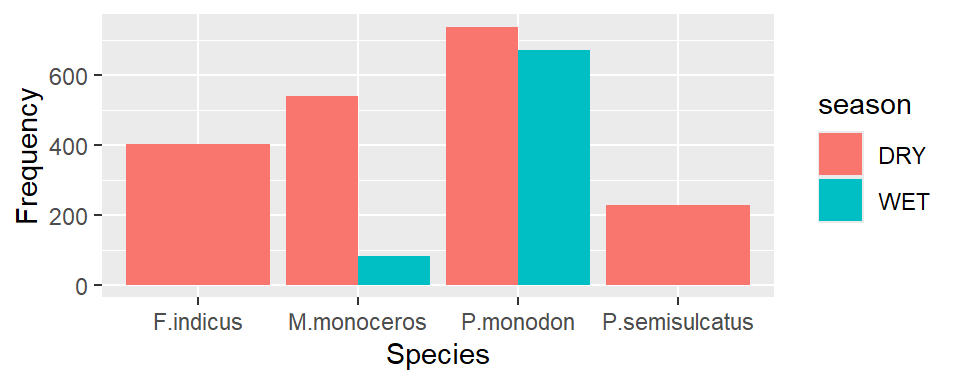
We notice that the species that only appear one season, the count for that species is span across and make the bar wideer than those species occur in both seasons. We can fix that by parsing position = position_dodge(preserve = "single") in the geom_bar function
ggplot(data = shrimp, aes(x = species.short, fill = season))+
geom_bar(position = position_dodge(preserve = "single"))+
labs(x = "Species", y ="Frequency")
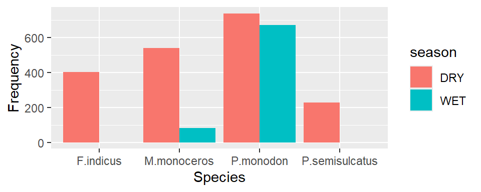
To add a black stroke color of the bar, add the argument col = "black" inside the geom_bar()
ggplot(data = shrimp, aes(x = species.short, fill = season))+
geom_bar(position = position_dodge(preserve = "single"), color = "black")+
labs(x = "Species", y ="Frequency")And to specify the width of the bar you specify a value in width=.75 argument in geom_bar()
1.9.2 Barplot for values
We have seen how to make barplot that show the count with geom_bar(). You can also use the barplot to show the values with the geom_col() function and specify what variables you want on the x and y axis. For instance, we want to show percentage of shrimp species by season. Because the geom_col() requires summarized statistics, we need to compute the percentage for each season as the chunk below highlight.
shrimp.pct = shrimp %>%
group_by(species.short, season) %>%
summarise(n = n()) %>%
mutate(pct = n/sum(n),
pct = (pct * 100) %>% round(2))
shrimp.pct# A tibble: 6 × 4
# Groups: species.short [4]
species.short season n pct
<chr> <chr> <int> <dbl>
1 F.indicus DRY 404 100
2 M.monoceros DRY 539 86.9
3 M.monoceros WET 81 13.1
4 P.monodon DRY 738 52.4
5 P.monodon WET 671 47.6
6 P.semisulcatus DRY 227 100 Once we have computed the statistics, we can use them to make barplot. Note that unlike the geom_bar(), which need only the x variable, geom_col() requires x and y variables specified. For illustration, we specified the x = species, and y = pct in the aes() to make a barplot that show the percentage of shrimp by season (Figure 37).
1.10 Pie and donut charts
A pie chart is a disk divided into pie-shaped pieces proportional to the relative frequencies of the classes. To obtain angle for any class, we multiply the relative frequencies by 360 degree, which corresponds to the complete circle. Either variables or attributes can be portrayed in this manner, but a pie chart is especially useful for attributes. A pie diagram for contribution of different fish groups/species to the total fish landings at a landing site of a river is shown in Figure 38.
shrimp %>%
group_by(species) %>%
summarise(n = n()) %>%
mutate(pct = round(n/sum(n)*100), 2) %>%
mutate(species = str_replace(string = species, pattern = " ", replacement = "\n")) %>%
mutate(label = paste0("(",pct,"%",")")) %>%
ggpubr::ggpie(x = "pct", label = "label", fill = "species", lab.pos = "in", palette = "jama", color = "ivory", ggtheme = theme_void(), )
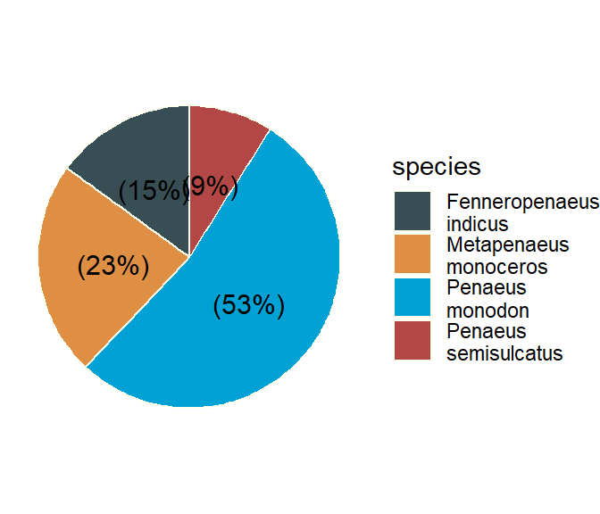
An extended pie chart is donut shown in Figure 39
shrimp %>%
group_by(species) %>%
summarise(n = n()) %>%
mutate(pct = round(n/sum(n)*100), 2) %>%
mutate(species = str_replace(string = species, pattern = " ", replacement = "\n")) %>%
mutate(label = paste0("(",pct,"%",")")) %>%
ggpubr::ggdonutchart(x = "pct", label = "label", fill = "species", lab.pos = "in", palette = "jama", color = "ivory", ggtheme = theme_void())
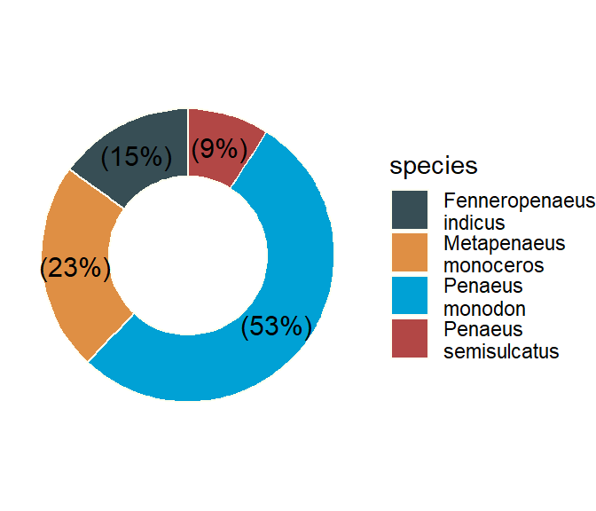
1.11 Bar with polar tranformation
shrimp %>%
group_by(species.short) %>%
count() %>%
arrange(-n) %>%
ggplot(aes(x = reorder(species.short,n), y = n,
fill = species.short), stat = "identity")+
geom_col() +
coord_polar(theta = "y")+
theme_bw() +
theme(axis.title = element_blank(), legend.position = "right", axis.text.y = element_blank(), axis.ticks = element_blank())+
scale_fill_brewer(palette = "Set2", name = "Species")
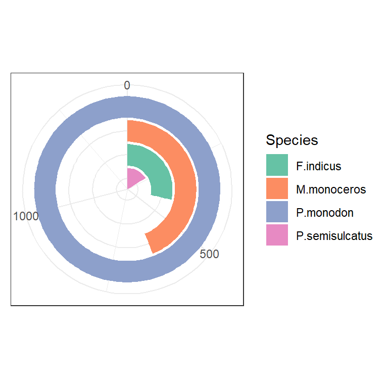
shrimp %>%
ggplot() +
geom_bar(aes(x = tide, fill = species.short),
color = "ivory") +
labs(x = "Tide", y = "Count") +
coord_polar()+
theme_bw() +
theme(axis.title = element_blank(),
legend.position = "right")+
scale_fill_brewer(palette = "Set2", name = "Species")
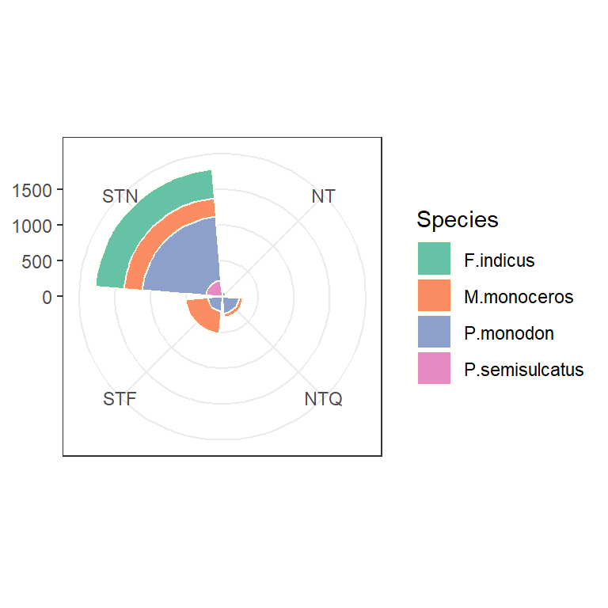
1.12 Ridge plot
Although the ggridges package provides geom_ridgeline and geom_density_ridges, we focus on the latter because it has ability to estimates data densities and then draws those using ridgelines.The geom geom_density_ridges calculates density estimates from the provided data and then plots those, using the ridgeline visualization.
lfq4 %>%
mutate(months = lubridate::month(date, label = TRUE)) %>%
ggplot()+
ggridges::geom_density_ridges(aes(x = tl_mm, y = months, fill = site), alpha = .7)+
scale_fill_brewer(palette = "Set2", name = "Sampling\nsite")+
theme_minimal()+
theme(legend.position = c(.85,.2), legend.background = element_rect())+
labs(y = "Months", x = "Total length (mm.)")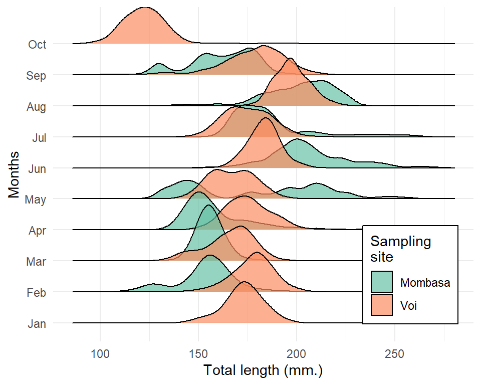
2 Combining multiple plots
When exploring data with many variables, you’ll often want to make the same kind of plot (e.g. a violin plot) for several variables. It will frequently make sense to place these side-by-side in the same plot window. The patchwork package extends ggplot2 by letting you do just that. Let’s install it:
Then load a package in the workspace
To use patchwork (Pedersen, 2020), save each plot as a plot object :
plot.tl = ggplot(data = lfq4,
aes(x = tl_mm, fill = site)) +
geom_density(alpha = 0.4, position = "identity")+
labs(x = "Total length (mm)", y = "Frequency")+
theme_minimal()
plot.wt = ggplot(data = lfq4,
aes(x = wt_gm, fill = site)) +
geom_density(alpha = 0.4, position = "identity")+
labs(x = "Weight (gram)", y = "Frequency")+
theme_minimal()+
theme(legend.position = "none")then add them together
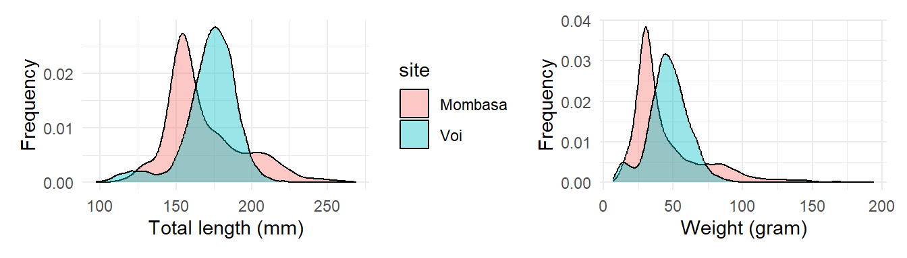
`
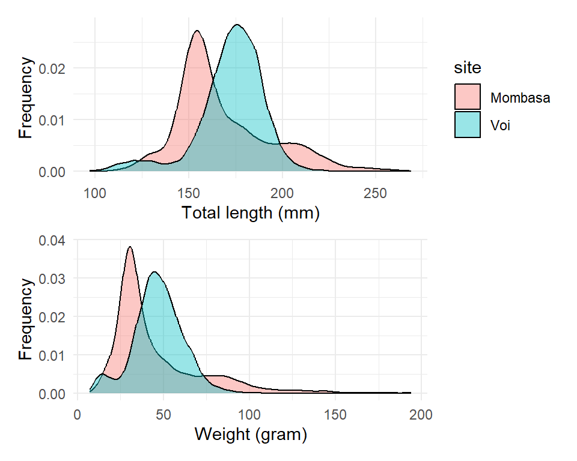
We need first to extract monsoon seasons from the dataset. We know from literature that the coasal waters of East Africa is affected by monsoon season, which is influenced trade winds, which is broadly categorized as;
- Northeast monsoon season — November through March
- Southeast monsoon season — May to september
- Intermonsoon season — April and October
We can use the month information to break our dataset into three monsoon seasons as;
plot.int =lfq4.season %>%
filter(site == "Voi" & season == "INT") %>%
ggplot(aes(x = tl_mm, y = wt_gm))+
geom_point(alpha = .2)+
theme_bw()+
scale_x_continuous(name = "Total length (mm)")+
scale_y_continuous(name = "Weight (gram)")+
annotate(geom = "label",x = 120, y = 80, label = "Northeast\nSeason")
plot.ne = lfq4.season %>%
filter(site == "Voi" & season == "NE") %>%
ggplot(aes(x = tl_mm, y = wt_gm))+
geom_point(alpha = .2)+
theme_bw()+
scale_x_continuous(name = "Total length (mm)")+
scale_y_continuous(name = "Weight (gram)")+
annotate(geom = "label",x = 140, y = 80, label = "Southeast\nSeason")
plot.se = lfq4.season %>%
filter(site == "Voi" & season == "SE") %>%
ggplot(aes(x = tl_mm, y = wt_gm))+
geom_point(alpha = .2)+
theme_bw()+
scale_x_continuous(name = "Total length (mm)")+
scale_y_continuous(name = "Weight (gram)")+
annotate(geom = "label",x = 120, y = 80, label = "Inter\n Monsoon")
plot.all = lfq4.season %>%
filter(site == "Voi") %>%
ggplot(aes(x = tl_mm, y = wt_gm, color = season))+
geom_point(alpha = .2)+
theme_bw()+
scale_x_continuous(name = "Total length (mm)")+
scale_y_continuous(name = "Weight (gram)")+
theme(legend.position = c(.2,.8))Yuo may plot One row with three plots and one row with a single plot
Or one column with three plots and one column with a single plot `
3 Labelling outliers
Interactive plots are great when exploring a dataset but are not always possible to use in other contexts, e.g. for printed reports and some presentations. In these other cases, we can instead annotate the plot with notes about outliers. One way to do this is to use a geom called geom_text.
lfq4.season %>%
filter(!site == "Voi") %>%
ggplot(aes(x = season, y = wt_gm, fill = season))+
geom_boxplot(alpha = .4, width = .29)+
ggrepel::geom_text_repel(aes(label = if_else( wt_gm > 175, site, ""))) +
theme_bw()+
scale_x_discrete(name = "Monsoon season")+
scale_y_continuous(name = "Weight (gram)")+
theme(legend.position = "none")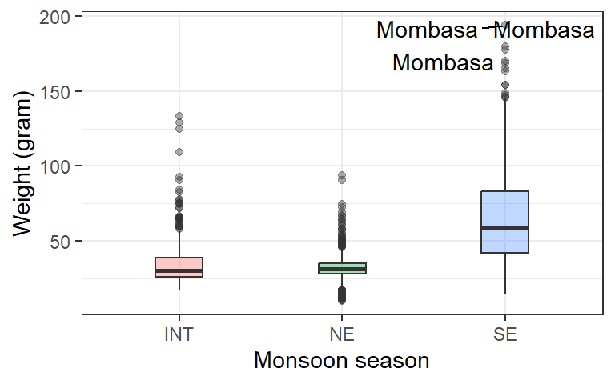
4 Add-on packages
The R community has developed packages that extend the capability of ggplot2. Some of the packages include:
- metR: Provide addition tools for plotting filled contour, and label contour lines
- ggrepel: Contains tools for automatically position non-overlapping text labels
- ggspatial: Spatial Data Framework for ggplot2
- RcolorBrewer: Contains color palettes for continuous and discrete plots
- cowplot: Contains addition themes and tools to combine ggplot2 plots in one panel
- egg: Provide tools for plot aligning and symmetrised ggplot2 plots
- oce: Provide color pallete for visualization of Oceanographic Data
- ggsn: Provide tools for mapping North symbols and scale bars on maps created with ggplot2
- gganimate: convert static ggplot2 plots to animations
- ggformula: adds some additional plot options to ggplot2
- sf : Add capabilities of ggplot2 to map spatial data such as simple features
- ggthemes: contains extra themes, scales, and geoms, and functions for and related to ggplot2
- ggridges: extend the geom_density function by plotiing closed polygons insted of ridgelines
- ggpmisc
5 References
Aphalo, P.J., 2016. Learn r ...as you learnt your mother tongue. Leanpub.
Pedersen, T.L., 2020. Patchwork: The composer of plots.
Wickham, H., 2016. ggplot2: Elegant graphics for data analysis. Springer-Verlag New York.
Citation
BibTeX citation:
@online{semba2024,
author = {Semba, Masumbuko},
title = {Basic Plots with Ggplot2},
date = {2024-04-01},
url = {https://lugoga.github.io/kitaa/posts/basicplots/},
langid = {en}
}
For attribution, please cite this work as:
Semba, M., 2024. Basic plots with ggplot2 [WWW Document]. URL https://lugoga.github.io/kitaa/posts/basicplots/